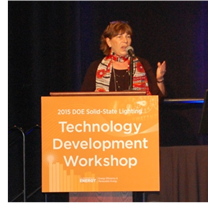
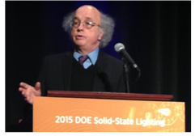
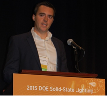
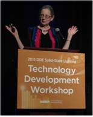
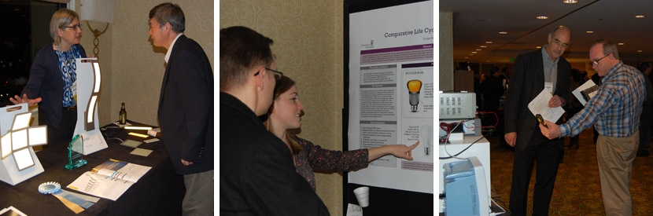
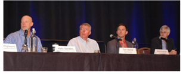
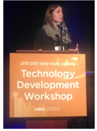
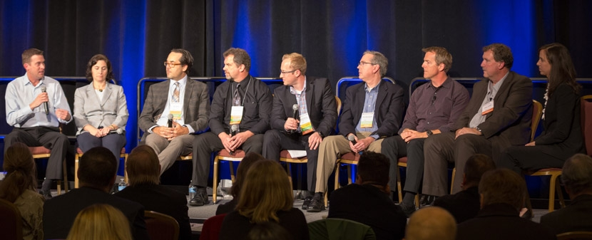
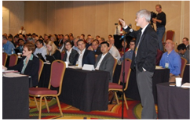

More than 230 lighting leaders from across North America gathered in Portland, OR, November 17–18, 2015, for the tenth annual Solid-State Lighting Technology Development Workshop, hosted by DOE. The diverse audience spanned the spectrum of SSL stakeholders, representing lighting, control, and components companies as well as research institutes, academia, national laboratories, municipalities, designers, specifiers, and distributors. The workshop’s purpose was to create a forum for airing application and performance issues related to the current level of solid-state lighting technology development, and to explore emerging capabilities being enabled by ongoing advances in SSL and controls technology.
Pre-Conference Guided Bus Tour
Portland’s 911 Federal Building was the destination for a preconference guided bus tour that took place the evening of November 16. The tour provided a firsthand look at an LED connected lighting system that replaced T8 fluorescent lighting in sections of the eight-story building as part of the General Services Administration’s Green Proving Ground program. Tour participants observed in action the Philips SpaceWise connected lighting system, consisting of 2x2 LED troffers with integral controls and sensors that can share data wirelessly with neighboring luminaires, thereby allowing them to switch, raise, or lower their light output in response to occupancy and daylight—and, in the process, maximize their operational efficiency. Participants also had a chance to observe the incumbent T8 fluorescent system.
WELCOME
DOE SSL Program Manager James Brodrick provided an introduction to the workshop sessions, inviting attendees to learn, share, and participate. He observed that lighting has already become more than just general illumination, citing its use for such things as facilitating alertness and sleep, growing plants, and communicating. Brodrick noted that while SSL saved 143 tBtu in energy in 2014, equivalent to $1.4 billion, that represents only 5% of the technology’s potential. “We’re just starting—it’s still the early days,” he said. “Things are starting to change and will continue. The best is yet to come.”
tuning the spectrum
The workshop’s keynote address was given by Tessa Pocock of Rensselaer Polytechnic Institute’s Smart Lighting Engineering Research Center, who spoke on tuning the spectrum for plant growth. She reviewed some research on tailoring a plant’s aesthetic, commercial, nutritional, and even pharmacological qualities by adjusting various characteristics of the light it receives. One of Pocock’s conclusions was that providing plants only with the red and blue light that’s been getting news coverage is far from optimal, because a broad spectrum is important for photosynthesis. Observing that we humans are practically blind compared with plants, which have a dozen different kinds of photoreceptors, she raised the possibility of creating a dynamic feedback loop in which plants communicate their needs to the lighting system, which reacts accordingly.
A panel on tuning the spectrum for health and productivity was moderated by Naomi Miller of Pacific Northwest National Laboratory. Observing that LEDs offer an opportunity to customize the spectrum, she noted the proliferation of color-tunable luminaires that are being marketed as enhancing health, mood, productivity, and enjoyment and bring with them such claims as increased alertness, improved sleep, and slowing of dementia symptoms.
Panelist George Brainard of Thomas Jefferson University’s Sidney Kimmel Medical College took a close look at the science underlying such claims, showing how light is able to alter our mood, alertness, and sleep cycle by stimulating photoreceptors in the eye that control the release of hormones. He also spoke of his work with NASA in using LED lighting to regulate the sleep cycles of the Space Station astronauts. But while Brainard admitted he’s excited by the spectral-tuning possibilities offered by solid-state lighting, he cautioned manufacturers to make sure their claims are supported by scientific evidence. “These are exciting times,” he said. “You have a technology you can tune, which never was possible with previous technologies. But be careful what you claim.”
Stephan Völker of Germany’s Technische Universität sounded a similar warning as he reviewed the results of a wide range of studies on the human-centric use of lighting in settings such as offices, retirement homes, and hospitals. He also cautioned that while light can have health benefits, it’s a double-edged sword, because anything that can heal also has the potential to harm—which is why guidance in the proper usage of light is so important. For example, Völker said, texting before bed could delay the onset of sleep by delivering light at the wrong time. He noted that the nonvisual effects of lighting involve more dimensions than just brightness, and that many existing standards are based on old lighting technology.
LED ADOPTION
Mary Yamada of Navigant and Rob Carmichael of the Cadeo Group discussed status and trends in LED market adoption in the U.S., with Yamada focusing on national trends and Carmichael focusing on the northwest. Drawing from recent DOE studies of the U.S. lighting market, Yamada remarked that it’s changing rapidly due to LED technology. She noted that while LED installations increased in all applications between 2012 and 2014, more than quadrupling to 215 million units overall, market penetration remains modest, climbing to 3% overall compared to less than 1% in 2012. SSL penetration is highest in outdoor applications, with LEDs enjoying a 10% share of outdoor applications in 2014, compared with just 2.8% of indoor applications. Yamada observed that with 77.7 million LED A-type lamps installed, they represent the most installations of LED lamps overall, but that LEDs in linear fixtures have seen the most growth—growing 11-fold since 2012. But while the greatest opportunity for LED installations is in the LED A-type market, she said, the greatest energy-savings potential is offered by linear fixtures and low/high bay applications in the commercial sector.
Carmichael focused on market research in the northwest, conducted by the Bonneville Power Administration in collaboration with the Northwest Energy Efficiency Alliance. He noted that right now in commercial buildings, linear fluorescent dominates the stock in terms of shares of installed watts, with high-intensity discharge dominating outdoors. Carmichael observed that among LED products, TLEDs exploded in popularity in 2014, but there’s been a trend toward fixture-based products as opposed screw-based lamps, with full-system retrofits increasing. “LED luminaires are most efficient and reliable when all of the components are designed together,” he said. “Integrated systems have more to offer to the end-user.”
LIGHTING SYSTEM OPTIMIZATION
Ruth Taylor of PNNL moderated a panel offering varied perspectives on how the new systems paradigm is impacting various fields, what lessons have been learned, and what’s needed to better leverage the opportunity in the future. Gabe Arnold of the DesignLights ConsortiumTM spoke about the coming evolution of lighting systems. He noted that lighting controls have seen limited deployment and have not always met energy-saving expectations, due not only to their complexity, but also to a lack of knowledge in how to design, install, commission, and operate them. Arnold described a future in which sensors, intelligence, communication, and energy measurement are incorporated into every device and luminaire. In such a scenario, he said, we’d purchase lighting as we now buy cars—with a basic model to which advanced features could be added. This would result, Arnold said, in lighting that was more responsive to people’s needs, with industry deriving most of its profits from software, service, and data instead of from hardware sales.
Dane Sanders of Clanton & Associates talked about lighting system optimization from a lighting designer’s perspective, using several real-life installations as examples. He observed that some of the decisions involved in lighting system optimization are about design rather than technology and involve coordinating with the interior designer and the mechanical engineer. “It’s not all about energy, but also about how people feel in the space,” he said. Among the lessons learned that were cited by Sanders: manufacturers need to support the product and honor the warranty, complexity needs to be reduced, component integration should be improved, and it would be helpful to have a controls programmer on site during installation.
Nate Mitten of Kimco Realty Corporation focused on outdoor lighting systems. He noted that because of SSL and connected lighting systems, he and his colleagues no longer view outdoor lighting primarily as a fixed utility expense, but rather as an investment that enhances the property by adding the potential of providing valuable services. Mitten said that in addition to saving energy, high-performance SSL luminaires that have already been installed by Kimco have whetted the company’s appetite for better lighting quality, which is quickly becoming a best practice and even a necessary customer amenity. He observed that SSL luminaires integrated with a growing number of sensors, controllers, and software applications are forming a technology platform that’s opening the door to additional possible features they are just beginning to discover.
REMAINING CHALLENGES
Bruce Kinzey of PNNL and Glenn Heinmiller of Lam Partners focused on LED street lighting. Kinzey, who serves as director of DOE’s Municipal Solid-State Street Lighting Consortium, noted the rapid progress made by LED street and area lighting, and reviewed barriers to adoption—including legacy systems and associated infrastructure, glare and lighting quality, and rising public concern about such things as sky glow and the potential health impacts of exposure to blue light. He observed that while some barriers remain, others are dropping away as LEDs prove their advantages in the field, and still others are emerging. Kinzey said none of these barriers seem insurmountable, but they may delay some implementation in the near term, adding that “we want to make sure energy use doesn’t get lost in the shuffle.”
Heinmiller focused on lessons learned from an LED street lighting conversion project in Cambridge, MA. He advised specifiers to eliminate excessive light levels, noting that Cambridge was able to reduce total lumens by about 40%. Heinmiller also stressed the importance of reducing glare, which he noted is more of a problem for pedestrians than for drivers. To that end, he said, specifiers should avoid fixtures with peak candela above 70 as well as those with intense spikes, and should look for IES “short” distributions. As for light trespass, Heinmiller observed that LED fixtures are much easier than high-intensity discharge to shield effectively, “so there’s no excuse for not having good shielding options.” He also discussed the benefits of adaptive dimming.
Naomi Miller and Philips Lighting’s Jim Gaines discussed the problem of flicker. Miller outlined the causes and types of flicker, noting that it can affect people neurologically even when they don’t detect it consciously, and reviewing the flicker factors—including modulation frequency, modulation amplitude, average luminous output (the DC component), and duty cycle. She described the development of the IEEE recommended practice for flicker, Standard P1789-2015, and demonstrated how to apply it. Miller also went over potential flicker-induced impairments, which range from seizures to migraines to distraction, and touched on the two major flicker metrics, percent flicker and flicker index. “After many years of work, we finally think we have a good understanding of flicker,” she observed.
Gaines differentiated between the three different kinds of temporal lighting artifacts: flicker, which can be seen when nothing is moving; stroboscopic effects, which are observed when the viewed object is moving; and phantom array, which occurs when the eye is moving but the viewed object isn’t. He noted that while LEDs don’t intrinsically produce flicker, they more faithfully reproduce the current waveform than conventional light sources, which tend to smooth it out. Gaines also cited other factors that contribute to a potential flicker problem with LEDs, including their fast response, the emergence of new driver types, and interaction with dimmers. He reviewed existing work on flicker, such as IEC/TR 61547-1, IEC 61000-3-3, IEEE 1789-2015, and a NEMA position paper.
Michael Royer of PNNL discussed the recently released IES TM-30-15, which details new metrics and tools for evaluating the color rendering characteristics of light sources. Royer, who is chair of the IES task group that developed TM-30, explained that it provides an improved color fidelity metric, based on a much more comprehensive set of 99 color samples compared to the eight on which CRI is based. He also discussed the color gamut metric, which is introduced in TM-30 and addresses the relative color saturation provided by a light source, and he gave a vivid on-stage demonstration to show how differences in color saturation affect the appearance of objects.
At an evening reception sponsored by the Next Generation Lighting Industry Alliance, attendees had an opportunity to network and to interact with hands-on exhibits of indoor and outdoor winners from the Next Generation LuminairesTM design competition. In addition, the reception featured a number of informative posters, videos, and demonstrations that were related to the workshop discussion topics, and that were presented by Philips, Rensselaer Polytechnic Institute, the University of Portland, Navigant, the University of California at Berkeley, OLEDWorks, Acuity Brands, and EMD Performance Materials Corp.

TOMORROW’S LIGHTING SYSTEMS
Brodrick kicked off Day 2 of the workshop by focusing on what we stand to gain from further improvements in LED lighting efficacy. Using a football analogy, he observed that LED lighting has only just passed the “midfield” point and still has quite a ways to go before reaching the end zone. Brodrick noted that the best devices on the market are at 160 lm/W, which is way short of the DOE target of 250 lm/W, and that the best luminaires are at 125–135 lm/W, compared to the DOE target of 200 lm/W. The reward from reaching those goals, he stated, is not only enormous energy savings (4.5 quads annually, equivalent to $40 billion), but also crossover benefits to other fields and a significant boost to U.S. manufacturing. “My question to you is: what’s your game plan?” he asked the audience.
Morgan Pattison of SSLS, Inc., gave a tutorial on the path to higher LED source, package, and product efficacy, based on the priority tasks set forth in DOE’s SSL R&D Plan. For phosphor-converted LED efficacy, he observed that the overall source efficiency is 43%, but the component efficacies are in the 80–90% range, “so you have to attack them all.” Pattison noted that DOE is supporting projects that are trying to solve the droop phenomenon, as well as projects that address the green gap. Other areas of funding, he said, include spectral efficiency and tuning, narrow red phosphors, quantum dots, encapsulation materials, novel emitter architectures and luminaires, and integration of LED package-power supply-optics. “We need to keep pushing,” he said. “Each of those benefits leads to other benefits.”
Gina Phelan of OLEDWorks talked about where OLEDs fit in to the total picture. She noted that OLED technology is a ways behind LEDs in terms of maturity but said it’s “moving very rapidly.” Phelan revealed that that OLEDs have achieved efficacies of 150 lm/W in the lab, with products at 40–60 lm/W currently finding use in practical applications such as task lighting and conference rooms, where they’re getting very positive responses. She reviewed the main areas of progress in OLED technology—including the development of higher-performance materials, the development of new substrates and light-extraction techniques, and major improvements in drivers. Phelan observed that the unique advantages of OLEDs give them a charm all their own and make them a perfect complement to LEDs. “In order to really appreciate the OLED, you have to experience it,” she said.
A panel on the path to connected lighting systems featured speakers from DOE’s inaugural Connected Lighting Systems Meeting, which was held at the same Portland location a day prior to the workshop. Noting that SSL inherently facilitates the integration of intelligence, network interfaces, and sensors into lighting devices, moderator Michael Poplawski noted that interoperability is important, because system performance is dependent not just on constituent device capabilities, but also on the ability of those devices to work together. He remarked that broad deployment of connected lighting systems will require system configuration complexity to be well-matched to owner/occupant capabilities, or greatly simplified, or effectively removed. Poplawski said connected lighting systems hold the potential to deliver not only improved energy performance and lighting quality, but also a growing list of other benefits that could compete with lighting. “This creates a natural role for DOE, to make sure we don’t lose focus on the lighting,” he said.
Kelly Sanders of Northwest Energy Efficiency Alliance noted that things are changing fast in the lighting industry, with a great deal of excitement mounting about the opportunity that connected lighting presents and the business value it will add. Calling controllability “the killer app” for SSL technology, he cautioned about the danger of losing sight of the lighting amid all the other links in the chain, such as networks and software. To accelerate adoption, Sanders said, such systems must be seamless and persistent, and provide data that lead to quantifiable business value. “I see energy efficiency as kind of a switch that allows us to leverage these other systems and benefits,” he said, noting that the other benefits aren’t quite defined yet, whereas energy efficiency brings immediate, quantifiable value.
Tom Herbst of Cisco predicted that “every light will become an IT-enabled device in the future.” How quickly that happens, he said, depends on industry developing fully functional, interoperable devices rather than becoming impatient and coming out with so-so products. The question, Herbst said, is how quickly industry can move safely to this new world, from both a security perspective and a business perspective. He observed that adding advanced controls increases energy savings but can also provide users with a new experience. “We have a lot of work to do, to make these technologies easier to adopt and easier to install,” Herbst noted. “The people who deliver systems that are actually deployable will be the ones who succeed, but providing a system that the workforce can actually adopt is the challenge.”
Brent Protzman of Lutron said the interoperability and integration of connected lighting systems are essential to make them worthwhile—as is finding the right applications, because early adopters are a small part of the market. He remarked that there’s inertia in the industry, with many people unwilling to install intelligent lighting systems because there’s no quick payback. “If we can’t provide them with apps today that make them believe they need these systems, they’ll probably opt for something else,” Protzman said. That’s why, he emphasized, it’s important that industry think about those applications and provide current examples, case studies, and research that show what interoperable, intelligent lighting systems can really do—instead of building products on the assumption that applications will follow.
Observing that there are phone apps available that aren’t being used, even though they’ve “blown the minds of the people who built the phones,” Tom Griffiths of ams-TAOS said the lighting industry will have to provide an initial round of apps that make it clear what the benefits are. This, he said, won’t be driven by energy savings, but rather by the benefits to users. Griffiths stated that the success of connected lighting systems will depend on their personalizing the space, and that just as smartphones have become synonymous with phones, connected lighting will become synonymous with lighting, so that “you’ll either have ‘lighting,’ or you’ll have ‘dumb lighting.’” Griffiths said monetization will be what tips the balance and predicted several different waves of adoption as those benefits become increasingly apparent.
LIFE CYCLE AND SUSTAINABILITY
Kelly Gordon of PNNL moderated a panel that addressed the life-cycle sustainability of LED lighting products. Panelist Heather Dillon of the University of Portland gave an update on the follow-up to a series of DOE LED life-cycle assessment studies she conducted in 2012–13. She said the 2015 follow-up found that while all the newer LED products continue to perform better than CFL and incandescent for environmental impacts, the LED lamp with the lowest-rated life may be less attractive in that regard than its 2012 counterpart, suggesting that consumers may need to be informed about tradeoffs between lamp cost and environmental impacts. While the 2015 lamps with longer-rated life showed less environmental impact than their 2012 counterpart, they haven’t yet reached 2017 predicted performance levels.
Rachel Dzombak, a Ph.D. student at the University of California at Berkeley, discussed the concept of circularity, which she defined as designing out waste from production cycles. She noted that many components of LED lighting are expensive—e.g., the LED wafer can cost as much as $8—and that only about 30% of electronics waste is recycled in the U.S., adding that “the lighting industry can’t repeat the mistakes the electronics industry made.” Dzombak pointed out that most e-waste ends up in landfills, where toxic metals leach into the environment, and that even when recycled, a significant amount of electronic material can’t be recovered. Remarking that end-of-life management can lead to material recovery, preserve embodied energy, and create closed-loop systems, she cited the need to assess the potential role for remanufacturing in the circular economy.
Chips Chipalkatti of Dr. Chips Consulting built on the presentations of Dillon and Dzombak to discuss the creation of a model for sustainability beyond energy savings. He pointed out that there are millions of traditional lighting fixtures installed, with substantial embodied energy vested in them, and millions of SSL units have been installed over the last decade, some with early failures and others still working but already obsolete or at least no longer state-of-the-art. Chipalkatti proposed that the best way of conserving this embodied energy is remanufacturing, which is widely used in the home appliance industry. He defined remanufacturing as not just repair or refurbishing, but a systematic and largescale process that can be repeated across the industry, and which saves energy while upgrading the product.
THE CHANGES AHEAD
Andrea Wilkerson of PNNL moderated a “superpanel” on how changing technology and business practices will affect the lighting industry. Gary Trott of Cree talked about his company’s CCT-adjustable CR Series troffer, which offers a SmartCastTM feature that automatically groups fixtures across a network. He observed that we’re still in the first of two lighting revolutions: the one that involves converting the incumbent technology to LED. Trott said the second lighting revolution, which involves the introduction of lighting products that do far more than just deliver light, is a “huge leap” from where the industry is at present, because much work is needed—especially with controls, which can be complicated to install and commission as well as to use. That’s why Trott called simplicity the key to the second lighting revolution, noting that “it’s very easy to make things complicated, but very hard to make them simple.”

Observing that the huge changes afoot in the lighting industry will require players to either transform or disappear, Yan Rodriguez of Acuity Brands discussed his company’s use of DC microgrids to boost efficiency and reduce installation costs. Rodriguez said centralizing the power on the ceiling or wall instead of including it with each luminaire boosts efficiency by 7%—by eliminating AC-to-DC conversion losses at each individual luminaire—and reduces installation costs by 90%, mainly because most of the wiring is low-voltage and thus can be done by someone other than an electrician. But he noted that ENERGY STAR® and DesignLights ConsortiumTM are based on AC power, and that right now there aren’t any incentives to promote the adoption of DC microgrids.
Ed Clark of ZGF Architects discussed the effect that new product capabilities will have on architectural design. He stressed the importance of having generational consistency, which allows individual products and components to be replaced without having to replace the entire system or luminaire. Clark noted that he encounters a lot of what he called “fear-based” pricing, which occurs when contractors who are not sure how to install something bid prices up in order to cover unplanned installation and commissioning costs. Contemplating the coming onslaught of advanced lighting systems, he predicted that an entirely new industry will arise to fill the gap of implementing them.
Chris Bailey of Hubbell Lighting focused his talk on ArcheType XTM, an outdoor-application optical platform his company created that allows the optics to be adjusted to provide the desired intensity distribution. He noted that it was developed because outdoor site conditions aren’t always conducive to IES distributions, which results in wasted light. Bailey explained that instead of resorting to a variety of static optics, Hubbell developed a faceted LED array that evolved into ArcheType X, which allows users to create their own distribution by rotating individual optics inside the optical cavity by as much as 355° from the axis and tilting the optics from 0° up to 70°. The result, he said, is user-defined performance and site-specific distributions, as well as a 10–30% energy reduction and increased pole spacing.
Lori Brock of OSRAM Sylvania talked about her company’s OmniPointTM downlight. She explained that it consists of an array of 60 LEDs, each one individually addressable and all of them pointed in different directions, so that end users can easily adjust the beam angle, direction, distribution, and intensity using a simple iPad application that switches various LEDs on and off depending on the desired output. Brock invited the audience to envision a future in which luminaires similar to the OmniPoint are equipped with a variety of sensors that allow them to recognize what kind of light output is needed and automatically adjust it accordingly. She said such a development is indeed possible within the next 10 years.
Dave Bisbee of Sacramento Municipal Utility District talked about how the lighting paradigm is changing for utilities. He remarked that because of the steadily increasing efficiency of LED lighting products, the days of high rebates and big energy-saving plans are coming to a close. For that reason, Bisbee said, utilities need to find new ways to motivate their customers to save energy, which is why utilities are beginning to expand their focus to include ways they can help customers use these emerging lighting technologies. He observed that simplifying rebate programs, and also centralizing them, would help speed adoption—as would the development by lighting manufacturers of solutions that “real people” care about.
Rob Fallow of Fortis Construction stressed the importance of educating contractors about new lighting products and how to install and commission them. He noted that LED lighting products have come down significantly in price over the past two years and, in some cases, are now even cheaper than fluorescent equivalents. Fallow observed that although two years ago it could take longer to procure LED fixtures, today there’s no difference in lead time between them and fluorescent fixtures. However, he emphasized the importance of accurate lead-time estimates, because alternative products are typically used in place of those that don’t arrive when planned. He said LED fixtures typically don’t add labor cost compared with fluorescent fixtures, unless remote drivers are involved.
Chip Israel of Lighting Design Alliance said he hasn’t yet seen any client demand for color tuning, which was one of the emerging features frequently mentioned at the workshop. He noted that although several years ago he didn’t specify many LED products at all, nowadays they’re pretty much all he specifies for most applications—not only because of new energy-efficiency regulations, but also because the performance has been steadily improving while prices have been dropping. But Israel cautioned that the relative newness of solid-state lighting technology can result in occasional issues, and gave several examples, emphasizing the importance of having strong relationships with manufacturers who’ll stand behind their products.
Brodrick concluded the workshop by thanking participants for their input and participation. He noted that the next DOE SSL workshop—the 13th annual SSL R&D Workshop—will be held in Raleigh, NC, February 2–4, 2016, and he encouraged attendees to stay apprised of all DOE SSL program activities by visiting www.ssl.energy.gov.